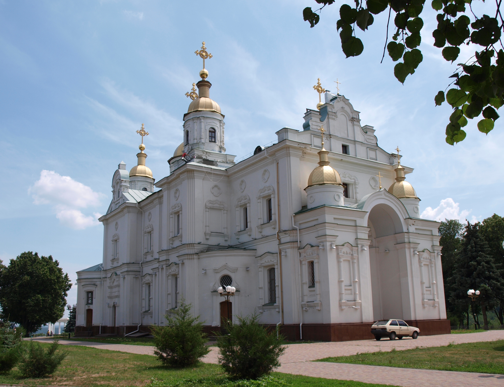

Моя Батьківщина - Полтава
Історичне місто України
Полтавський краєвид

Успенський собор
Полтавський парк

Полтава - історичне місто в центральній Україні, відоме своєю героїчною історією,
архітектурою та культурними традиціями. Тут відбулася знаменита Полтавська битва 1709 року.
Студент: Іванов Артур, група 303-ТН
Лабораторна робота №6, завдання 3